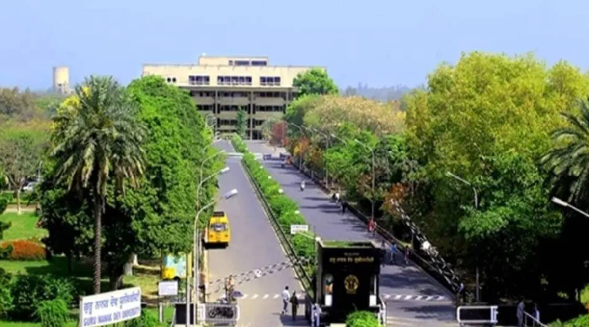
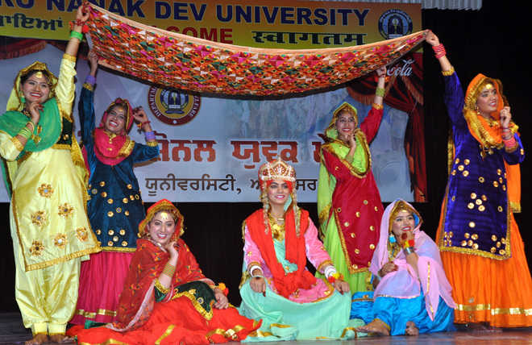
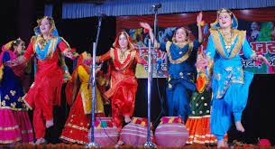

Login Space:
GNDU is among Top Ten “High Performing State Public Universities” across India by MHRD. GNDU is continuously improving its NIRF ranking for consecutive last four years by securing 51st positions in NIRF ranking in 2020. GNDU has increased its H- Index from 63rd position in 2017 to 107th position in 2020.
Ranking Of Guru Nanak Dev University The university has UGC approval and is listed by NIRF 2022 as being in position 80 overall for its category. Over 23 times, GNDU has taken home the Maulana Abul Kalam Azad Trophy, demonstrating the commitment and value placed on the sports world.
Where GNDU is situated? AMRITSAR
Guru Nanak Dev University's campus is spread over 500 acres (200 ha) near village of Kot Khalsa, nearly eight km (5.0 mi) west of the Amritsar, next to Khalsa College, Amritsar.
When was GNDU founded? Guru Nanak Dev University was established at Amritsar on November 24, 1969 to mark the 500th birth anniversary of Sri Guru Nanak Dev Ji. It is both a residential and an affiliating university. In conceiving the future course of the University, the objectives enshrined in the Guru Nanak Dev University Act 1969, emphasised that the new University would make provision for imparting education and promoting research in the humanities, learned professions, sciences, especially of applied nature and technology The University is successfully catering to twenty thousand students in various faculties at University Campuses and Constituent Colleges. Guru Nanak Dev University is the first University of the region which introduced on-line admissions to its courses, on-line counselling for State Level Admissions and Credit Based Evaluation System. All the results have been computerized and OMR (Optical Magnetic Recognition) system is being used to bring in more efficiency and transparency. It is again first for any University in the region to have computerized it examination and registration system. The students now have an all time access to their results through SMS service. The University has risen to 16th rank in the top 50 universities of the country, as per recent survey conducted by 'India Today' and has achieved 11th Position, out of the 500 universities, in Publications in science. The University has won the highest sports Award in the country, the Maulana Abul Kalam Azad Trophy, for a record of 21 times.
GNDU famous things to do:
Visit Library and explore it.GNDU is infamous for its mammoth collection of journals and historical documents. The collection of books is awesome and the it’s the best place to be at because you will have so much to explore.
If you are a nature lover then you are at one of the best campuses in India. GNDU is blessed with awesome flora and fauna. This is the best time to spot migratory birds, and some himalayan birds on their way to spend harsh winters in plains.
Hone your photography skills. Amritsar is a lens lover's paradise and GNDU and nearby areas a moreso.
Overall Amritsar has lot to offer but a lot is hidden in the walled city, much of it is not known to tourists so a lot usually goes unexplored……..Make the best of the time till you are in GNDU…….And yes, evening and morning walks in and around the campus are a delight………..Make best of the time….You will miss GNDU once you leave…
Tourist place near GNDU:
Golden Temple
Wagha Border(Attari Border)
Laal Mata Devi Mandir
Durgyana Madir etc.......
Heads of GNDU:
Designation
Name
Vice Chancellor
Prof.(Dr)Jaspal Singh Sandhu
Dean Academic Affairs
Prof.Sarabjot Singh Behl
Registrar
Prof.K.L Kahlon
Library/Front View Of University:
Youth Festival
Bhangra:
Gidha:
 
Western:
etc.........
Some Sports Competitions are:
Swimming:
Badminton:
Football:
GNDU is nice place for youths to have their addmissions here in order to acheive greater heights .
Thanku You. Contact Details:9915018178
Email:harshita803singh@gmail.com
@copyright 2023 Guru Nanak Dev University
Privacy an Policy